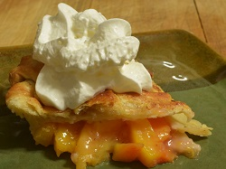
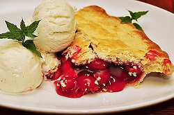
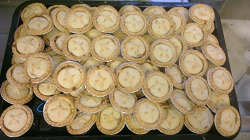
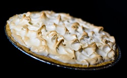

Pies by the slice $4.95

Enjoy a generous slice of any of our pies in the shop, or take a slice to go. You'll always find classic favorites like our signature Chess Pie, All-American Apple, Blueberry, Cherry, Puddin' (Chocolate Creme), Banana Creme, Lemon Meringue, and Dixie Pecan, as well as seasonal specials like Strawberry Rhubarb, Georgia Peach, Shoofly, Pumpkin, or Royal Mincemeat.
À la mode $1.25 per scoop

Top any slice of pie with a scoop of ice cream! Choose from French vanilla, chocolate fudge, dulce de leche, mocha chip, mint chocolate chip, sweet cherry, and no-sugar-added vanilla (sweetened with Splenda tm). All ice cream flavors are also available by the pint ($4.95) to take home.
Mini-pies $8

When one slice just isn't enough! Our 6" mini-pies are sized to share. Perfect for a romantic picnic or as the finishing touch for a dinner for two. Kids can't agree on a flavor? Two mini-pies are the ticket to family harmony.
Whole pies $14.95

Need a quick and delicious dessert? Our whole pies serve six. They're the perfect ending to a weeknight meal or a weekend barbeque. (They make a great breakfast treat too!) Don't forget to pick up a pint of our ice cream - the ideal accompaniment to our delectable pies.
Specialty pies
Gluten-free crusts $16.95
Our gluten-free crusts are made especially for us by a national gluten-free bakery so you can be assured of high quality. We use good safety procedures in our kitchen to prevent cross-contamination. If you need more information about how we work to keep our customers with food allergies safe, please contact us.
No-sugar-added pies $15.95
Now everyone can enjoy a nice slice of pie! Our no-sugar-added fruit pies are sweetened with Splenda(tm). We even have no-sugar-added ice cream to top off your slice of pie.
Nut-free pies
With the exception of our Dixie Pecan Pie, all of our pies and pie crusts are nut-free. We use good safety procedures in our kitchens to prevent cross-contamination. If you need more information about how we work to keep our customers with food allergies, safe, please contact us.